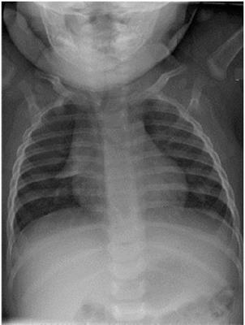
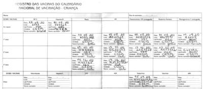
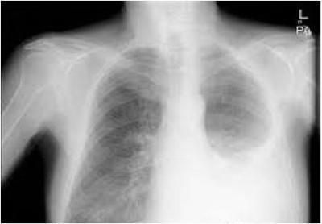
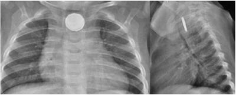
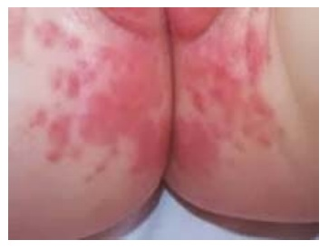
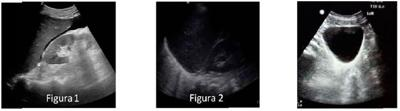
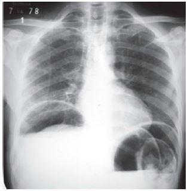
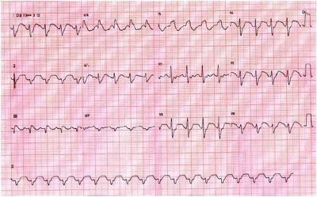
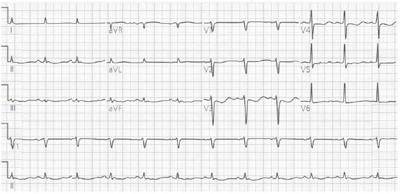
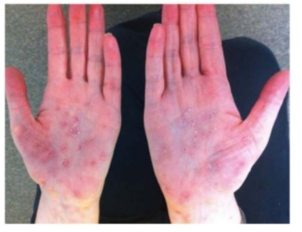

Questão 61 · Política Nacional de Humanização · 4000141187Mulher, 29a, procura equipe de saúde da família e quer realizar mamogra a. Relata que sua mãe foi tratada de câncer de mama há 8 anos, com diagnóstico recente de recidiva. A EQUIPE DE SAÚDE BUSCA CONHECER A HISTÓRIA DE VIDA DA PACIENTE E SUA EXPERIÊNCIA ANTERIOR COM O CÂNCER DE MAMA NA FAMÍLIA PORQUE A CLÍNICA AMPLIADA E COMPARTILHADA:
A Não é suficiente para cuidar de câncer de mama.
B Baseia-se na clínica do sujeito.
C Se ocupa da experiência com a doença e não propriamente pela doença.
D Considera que a experiência com a doença é fator determinante para a ocorrência de câncer de mama nessa paciente.
Questão 62 · Sigilo prof issional · 4000141186Médico atende homem de 45 anos que apresenta exame positivo para sí lis. Paciente está preocupado com a saúde da parceira, acompanhada pela mesma equipe de saúde da família, e pede que o médico solicite o exame da parceira sem que ela saiba o resultado do exame dele. EM RELAÇÃO À SOLICITAÇÃO DO EXAME DE INVESTIGAÇÃO DE SÍFILIS PARA A PARCEIRA, A CONDUTA É:
A Solicitar exame e contar sobre o exame do marido, se resultado positivo.
B Não investigar a parceira e tratar o marido.
C Pactuar com o paciente que ele conte o seu resultado e depois solicitar o exame.
D Atender ao pedido do paciente e solicitar o exame.
Questão 63 · Projeto Terapêutico Singular · 4000141185Em reunião da Equipe de Saúde da Família, a agente comunitária de saúde apresenta caso de família composta por mulher de 25a, com 4 lhos, moradora do território há 6 anos, atualmente desempregada, com relato de uso de drogas ilícitas. Filho de 6 meses de idade não é trazido para consulta na unidade básica de saúde desde o primeiro mês de vida, apesar do agendamento proposto. A CONDUTA É:
A Transferir o seguimento da família para o Centro de Atenção Psicossocial.
B Elaborar um Projeto Terapêutico Singular.
C Agendar consulta da mãe e criança com o Núcleo de Apoio à Saúde da Família.
D Agendar consulta da mãe e criança com a Psicóloga.
Questão 64 · Program Saúde da Família PSF e Estratégia Saúde da Família ESF · 4000141184Pacientes com diabetes melito têm procurado as Unidades Básicas de Saúde com queixas de ansiedade, muita preocupação, tristeza e medo, condição conhecida como Sofrimento Mental Específico da Diabetes (SMED). CABE À EQUIPE DE SAÚDE DA FAMÍLIA:
A Considerar a possibilidade de SMED principalmente em pacientes idosos do sexo masculino com diabetes melito.
B Iniciar o uso de antidepressivos para pacientes jovens com diabetes melito.
C Realizar rastreamento de SMED na população com diabetes melito sob responsabilidade da equipe.
D Realizar abordagem individualizada a respeito de dúvidas e angústias relativas à doença e seu tratamento.
Questão 65 · Determinação Social da SaúdeDeterminantes Sociais da Saúde DSS · 4000141183Em 2012, um estudo britânico avaliou os efeitos de uma campanha massiva para informar e persuadir as pessoas a terem uma vida mais saudável. O estudo concluiu que reduções no comportamento de risco foram observadas principalmente entre aqueles grupos socioeconômicos e educacionais mais elevados. Entre as pessoas com menor quali cação profissional a prevalência de comportamentos de risco era cinco vezes maior do que entre aquelas com ensino superior. A PARTIR DOS RESULTADOS DESTA PESQUISA ASSINALE A ALTERNATIVA CORRETA:
A Enfrentamento da iniquidade em saúde depende de um conjunto de políticas públicas sociais.
B Quanto menor a desigualdade econômica, piores as condições de saúde da população.
C A causa do grupo mais pobre não aderir aos comportamentos saudáveis é a falta de informação.
D No Brasil, o arcabouço jurídico do SUS não recomenda a divulgação dos determinantes sociais de saúde.
Questão 66 · Emenda constitucional n 952016 · 4000141182Em fevereiro de 2020 o Conselho Nacional de Saúde publicou em sua página a seguinte informação: “Saúde perdeu R$ 20 bilhões em 2019”. Em relação às perdas mencionadas no orçamento anual do SUS, ASSINALE A ALTERNATIVA CORRETA:
A Deve-se à compra de planos de saúde privados para funcionários públicos nas diversas instâncias de governo e empresas púbicas.
B Deve-se aos efeitos da Emenda Constitucional 95.
C Deve-se ao subsídio do estado brasileiro aos serviços privados de saúde.
D Deve-se ao não ressarcimento ao SUS pelo atendimento de pessoas que pagam planos de saúde e são atendidas no SUS.
Questão 67 · Bioética · 4000141181A Resolução CFM 1995/2012 define as diretivas antecipadas de vontade (DAV) como o conjunto de desejos manifestados pelo paciente, sobre cuidados e tratamentos que quer, ou não, receber no momento em que estiver incapacitado de expressar, livre e autonomamente, sua vontade. ACERCA DA DAV, É CORRETO AFIRMAR QUE:
A Assim como na autorização para doação de órgãos, o cumprimento das DAV do paciente requer a anuência dos familiares.
B As DAV somente terão efeito legal quando devidamente registradas em cartório e anexadas ao prontuário médico.
C O médico levará em consideração as DAV nas decisões sobre cuidados e tratamentos de pacientes que se encontram capazes de expressar de maneira livre e independente de suas vontades
D Caso o paciente tenha designado um representante para tal fim, suas informações serão levadas em consideração pelo médico.
Questão 68 · Telessaúde · 4000141180A Portaria no 467 de 20 de março de 2020 dispõe sobre as ações de Telemedicina, com o objetivo de regulamentar e operacionalizar as medidas para o período de emergência de saúde pública de importância internacional. Esta portaria reconhece a possibilidade e a eticidade da utilização da Telemedicina, em caráter de excepcionalidade e enquanto durarem as medidas de enfrentamento da pandemia por SARS-CoV-2. É CORRETO AFIRMAR:
A Os médicos que realizarem as ações de Telemedicina deverão atender aos preceitos éticos de beneficência, não-maleficência, sigilo das informações e autonomia.
B Devido à gravação do atendimento por meio de tecnologia da informação e comunicação, o médico estará dispensado do registro em prontuário clínico do paciente.
C As ações de interação à distância contemplam o atendimento pré-clínico, de suporte assistencial, de consulta, monitoramento e diagnóstico no âmbito do sistema público de saúde.
D A emissão de receitas e atestados médicos à distância será válida em meio eletrônico, mediante uso de assinatura eletrônica comum do profissional.
Questão 69 · Projeto Terapêutico Singular · Política Nacional de Atenção Básica PNAB · 4000141179Um ambulatório para doenças crônicas não transmissíveis funciona um período por semana com equipe multipro ssional composta por três médicas, três enfermeiras, um nutricionista e uma psicóloga. Atualmente, o ambulatório tem 2.700 pacientes cadastrados. A la de espera para atendimento com o nutricionista e com a psicóloga é de cinco e seis meses, respectivamente. Embora a maior parte dos pacientes seja acompanhada há vários anos, uma pesquisa recente com usuários demonstrou que a maioria dos entrevistados não se lembrava do nome dos profissionais que o acompanhavam. ASSINALE A ESTRATÉGIA INDICADA PARA QUE SE OBTENHA SIMULTANEAMENTE O FORTALECIMENTO DO VÍNCULO TERAPÊUTICO ENTRE PROFISSIONAIS E PACIENTES, A DIMINUIÇÃO DO TEMPO DE ESPERA PARA CONSULTAS COM NUTRICIONISTA E PSICÓLOGO E A MAIOR FACILIDADE PARA MONITORAMENTO DE RESULTADOS CLÍNICOS E DISCUSSÃO DE CASOS:
A Equipe de Referência e Apoio Matricial
B Realização de grupos de apoio com pacientes e familiares.
C Projeto Terapêutico Singular.
D Reuniões periódicas com participação dos trabalhadores do ambulatório.
Questão 70 · Toxicologia ocupacional · 4000141178Mulher, 26a, procurou pronto atendimento com quadro de tonturas, dores de cabeça, cansaço e náuseas há duas semanas. Foi medicada com sintomáticos e encaminhada para consulta com Equipe de Saúde da Família, onde refere que o quadro se mantém apesar da medicação analgésica e os sintomas são piores no nal do dia. O médico de família e comunidade pergunta sobre a ocupação e condições de trabalho, solicita exames, afasta a paciente do trabalho por uma semana e notifica o caso no Sistema de Informação de Agravos de Notificação (SINAN) A OCUPAÇÃO DA PACIENTE E A NOTIFICAÇÃO NO SINAN SÃO, RESPECTIVAMENTE:
A Trabalhadora em fábrica de colchões; intoxicação por isocianatos.
B Trabalhadora rural; intoxicação por agrotóxicos.
C Manicure; intoxicação por solventes.
D Montadora em fábrica de celulares; intoxicação por fumos metálicos.
Questão 71 · Bases legais de Saúde do Trabalhador · 4000141177A Lista de Doenças Relacionadas ao Trabalho (LDRT) que consta do Anexo LXXX da Portaria de Consolidação no. 5, de 28 de setembro de 2017, tem por nalidade orientar os pro ssionais de saúde sobre a possível relação do adoecimento com a exposição a riscos para a saúde presentes no trabalho. Nela, as leucemias (C91-C95) estão associadas aos seguintes agentes etiológicos ou fatores de risco de natureza ocupacional:
A Isocianatos orgânicos, aminas aromáticas e campos eletromagnéticos.
B Agentes antineoplásicos, acrilatos e aldeído fórmico.
C Radiações ionizantes, agrotóxicos clorados e óxido de etileno.
D Benzeno, radiação ultravioleta e agrotóxicos fosforados.
Questão 72 · Vigilância em Saúde do Trabalhador · 4000141176Em agosto de 2019, as praias do Nordeste brasileiro foram tomadas por cinco mil toneladas de petróleo cru, que matou animais marinhos, poluiu praias e prejudicou mais de 300 mil pescadores. Entre trabalhadores formais e voluntários que se dedicaram a retirar o óleo das praias, centenas de milhares de pessoas foram expostas sem a devida proteção. EM LONGO PRAZO, A EXPOSIÇÃO AO PETRÓLEO CRU PODE PROVOCAR DIVERSOS EFEITOS À SAÚDE COMO:
A Desmielinização do sistema nervoso central.
B Pneumonite por hipersensibilidade.
C Danos hepáticos e/ou renais.
D Dermatites de contato.
Questão 73 · Mortalidade Proporcional · 4000141175Um município noti cou os seguintes indicadores ao analisar grupos de causas básicas: mortalidade proporcional devido a doenças cardiovasculares de 30% e de causas externas de 11%; percentual de anos potenciais de vida perdidos de 11% por causas cardiovasculares e 30% por causas externas. ASSINALE A ALTERNATIVA CORRETA:
A As causas externas e as doenças cardiovasculares são as principais causas de morte no município.
B Os indicadores mostram o risco de morrer tanto por doenças cardiovasculares como por causas externas no município.
C A cidade tem grande percentual de idosos que se expõem a causas externas.
D Há grande contingente de óbitos precoces.
Questão 74 · Mortalidade Geral · Medicina Preventiva · Letalidade · 4000141174Em uma cidade de 1.000.000 habitantes, foram noti cados 1.000 casos e 50 mortes de uma doença aguda X no ano. O total de mortes de todas as causas foi 150. CALCULE O COEFICIENTE DE MORTALIDADE DA DOENÇA X POR 100 MIL HABITANTES, A MORTALIDADE PROPORCIONAL PELA DOENÇA E A LETALIDADE DA DOENÇA EM PORCENTAGEM, RESPECTIVAMENTE:
A 150; 15; 0,05.
B 150; 33; 0,5.
C 5; 33; 5.
D 5; 15; 33,3.
Questão 75 · Estudos de f ase III · Medicina Preventiva · Estudos de f ase II · 4000141173SOBRE ENSAIOS CLÍNICOS PARA OBTENÇÃO DE UMA NOVA VACINA CONTRA UMA DOENÇA, ASSINALE A ALTERNATIVA CORRETA:
A A fase IV é a que permite a liberação da vacina para comercialização e uso para a população.
B Ensaios clínicos de fase III avaliam a segurança e as doses mais eficazes da vacina.
C O monitoramento do perfil de segurança de curto prazo é realizado na fase II do ensaio.
D Ensaios clínicos de fase I necessitam aleatorização de pacientes para avaliar eficácia inicial da vacina.
Questão 76 · Metanálises · 4000141172Uma metanálise sobre a associação de uma exposição X ao risco de piora do prognóstico de uma doença Y incluiu seis estudos a partir de critérios pré-definidos. Os resultados de medidas de associação são apresentados na figura abaixo: A ALTERNATIVA CORRETA É:

A A maioria dos estudos não apresenta associação significativa individualmente.
B O estimador global apresenta maior variabilidade que os estudos isolados.
C O resultado da metanálise descarta a associação entre a exposição e a piora do prognóstico da doença devido ao pequeno
D O estudo 1 é o de maior peso nos resultados.
Questão 77 · Climatério · 4000141171Mulher, 52a, comparece à Unidade Básica de Saúde com queixa de ondas de calor, di culdade para dormir e diminuição da libido há 1 ano. Refere que acorda a noite por causa das ondas de calor, com grande impacto na qualidade de vida. Não apresenta antecedentes mórbidos, nega cirurgias prévias e a data da última menstruação foi há 14 meses. Antecedentes familiares: mãe e pai hipertensos e diabéticos. Resultados dos exames: TSH= 3,5 colesterol= 45 mg/dL; triglicérides= 310 mg/dL, glicemia= 85 mg/dL; Hb= 13,6 g/dL; Ht= 42,1%. A CONDUTA É PRESCREVER:
A Estradiol 0,05mg por dia transdérmico e progestágeno oral.
B Estradiol 1mg por dia transdérmico.
C Estradiol 1mg por dia e progestágeno orais.
D Estradiol 2mg por dia oral.
Questão 78 · Complicações · Prematuridade · Gestação monoamniótica · 4000141170Primigesta de 34 semanas, sem pré-natal, chega à maternidade com quadro de sangramento vaginal intenso. Exame obstétrico: altura uterina: 39 cm; toque: colo fechado e com apresentação inatingível. Submetida a cesárea de urgência. A foto apresenta um momento do intraparto: A CONDIÇÃO APRESENTADA NA FOTO ESTÁ ASSOCIADA À GESTAÇÃO:

A Gemelar monocoriônica e monoamniótica.
B Pré-termo complicada por rotura de vasa prévia.
C Gemelar monocoriônica e diamniótica.
D Pré-termo com polidrâmnio e prolapso de cordão.
Questão 79 · Corioamnionite · Rotura prematura de membranas ovulares RPM · 4000141169Intercorrências obstétricas obstetrícia patológica Mulher, 29a, G3P2C0A0, 33 semanas e 4 dias de gestação, vem à Unidade de Emergência com queixa de contrações uterinas dolorosas e redução da movimentação fetal há 4 horas. Nega queixas nos demais aparelhos e não tem comorbidades. Exame físico: regular estado geral, Temp= 39oC, FC= 117 bpm, FR=18 irpm, PA= 100x60 mmHg; exame obstétrico: altura uterina 31 cm, dinâmica uterina 3 contrações de 30 segundos em 10 minutos, batimentos cardíacos fetais 166 bpm, toque vaginal: colo 70% esvaecido, medianizado, 4 cm de dilatação, bolsa íntegra, feto cefálico. Exame sumário de urina: normal, Leucócitos= 22.570 mm³ (20% de bastões). Foram coletadas: cultura para estreptococo do grupo B, hemocultura e urocultura. ALÉM DA ANTIBIOTICOTERAPIA DE AMPLO ESPECTRO E SUPORTE A CONDUTA É:
A Aguardar resultado de culturas para definir via de parto.
B Realizar neuroproteção fetal.
C Assistir ao trabalho de parto vaginal.
D Inibir trabalho de parto por 48 horas, até maturação pulmonar fetal.
Questão 80 · Diagnóstico dif erencial · 4000141168Mulher, 29a, procurou Unidade Básica de Saúde por irregularidade menstrual há dois anos. Encontra-se em amenorreia há cinco meses com teste de gravidez negativo. Refere menarca aos 12 anos. Método contraceptivo: condom. Antecedente pessoal: fibromialgia em tratamento com amitriptilina há três anos. A ETIOLOGIA MAIS PROVÁVEL DA IRREGULARIDADE MENSTRUAL É:
A Hiperprolactinemia.
B Adenomiose.
C Síndrome dos ovários policísticos.
D Hiperplasia adrenal congênita de manifestação tardia.
Questão 81 · Endometriose · 4000141167Mulher, 30a, nuligesta, com quadro de dismenorreia incapacitante e dispareunia de profundidade há cinco anos. Refere ciclos menstruais regulares sem uso de método contraceptivo. Ressonância magnética de pelve: lesão retrátil em região retrocervical que envolve a camada serosa/muscular do reto alto e a parede posterior do útero/colo, medindo 1,4 x 1,0 cm. Ovários medianizados, com lesões císticas de conteúdo hemorrágico multiloculadas com septos nos de permeio e paredes nas, com grumos depositados no interior das lesões que medem respectivamente 1,6 x 0,9 cm e 1,1 x 0,8 cm; ausência de ascite. A HIPÓTESE DIAGNÓSTICA É:
A Carcinomatose peritoneal.
B Doença inflamatória pélvica.
C Endometriose profunda.
D Cisto hemorrágico ovariano.
Questão 82 · Obstetrícia · Prevenção · 4000141166Mulher, 33a, G3P2A1, em alojamento conjunto com 24h de puerpério, tipo sanguíneo A e Rh negativo, com Coombs indireto positivo anti-D (coletados na admissão hospitalar para o parto). Recém-nascido (RN): tipo sanguíneo O e Rh positivo. Antecedente pessoal: Imunoglobulina anti-Rh após o primeiro parto, após o aborto e às 28 semanas desta gestação. A CONDUTA É:
A Contra indicar nova gestação, pois paciente isoimunizada.
B Solicitar Coombs direto para orientar uso de Imunoglobulina anti-Rh.
C Imunoglobulina anti-Rh não indicada por Coombs indireto positivo.
D Prescrever Imunoglobulina anti-Rh, por RN Rh positivo.
Questão 83 · Doenças associadas à gestação · Diabetes na gestação DMG · Obstetrícia · 4000141165Primigesta de 37 semanas e 2 dias, com diabetes gestacional, retorna ao pré-natal com queixa de redução de movimentação fetal há 3 dias (mobilograma: 4 movimentos fetais em 1 hora). Per l glicêmico: jejum= 68 mg/dL, 1 hora pós café= 116 mg/dL, 1 hora pós almoço= 105 mg/dL, 1 hora pós jantar= 118 mg/dL, 23:00 horas = 70 mg/dL, 3:00 horas= 60 mg/dL. Refere manter a mesma dieta com ganho de 300 gramas em 7 dias. Realizou cardiotocogra a: ativa e ultrassonografia: feto cefálico, peso fetal estimado de 3600g (>p90), ILA= 180 mm e Doppler normal, no dia de hoje. A CONDUTA É:
A Realizar cardiotocografia semanal e indução de parto às 40 semanas.
B Realizar cardiotocografia a cada três dias e parto cesárea às 39 semanas.
C Induzir parto com vigilância de vitalidade fetal.
D Realizar parto cesárea urgência.
Questão 84 · Métodos moleculares para o diagnóstico · 4000141164O uso de testes de biologia molecular para pesquisa de HPV de alto risco oncogênico no colo uterino pode ser utilizado como estratégia de rastreamento de câncer de colo. No Brasil, o principal motivo desta estratégia não ser utilizada é:
A Alta incidência de câncer em mulheres abaixo de 40 anos
B Uso da vacinação para HPV para meninos e meninas
C Alto custo dos testes moleculares para detecção de HPV
D Necessidade de migração para sistema de rastreamento organizado
Questão 85 · Outras lesões prolif erativas da mama · 4000141163Mulher, 42a, retorna para resultado de biópsia excisional de nódulo de mama esquerda BI- RADS® 4: broadenoma simples, com achados no parênquima adjacente ao nódulo de hiperplasia estromal pseudo-angiomatosa, metaplasia apócrina e hiperplasia lobular atípica. É CONSIDERADA LESÃO PRECURSORA PARA O DESENVOLVIMENTO DE CÂNCER DE MAMA COM RISCO MODERADO:
A Metaplasia apócrina.
B Hiperplasia lobular atípica.
C Fibroadenoma simples.
D Hiperplasia estromal pseudoangiomatosa.
Questão 86 · Hormonioterapia · Imunoterapia · 4000141162Mulher, 34a, G1P1C0A0, mastectomizada há 40 dias por carcinoma ductal invasor, com receptores negativos para estrogênios e progestagênios e O MÉTODO CONTRACEPTIVO INDICADO É:
A Dispositivo intrauterino com cobre.
B Anticoncepcional oral combinado de baixa dosagem.
C Implante liberador de levonorgestrel.
D Acetato de medroxiprogesterona de depósito.
Questão 87 · Doenças associadas à gestação · Doenças inf ecciosas na gestação HIV síf ilis hepatites herpes · 4000141161Sif ilis na gestação Primigesta, 18a, com idade gestacional de 10 semanas comparece à primeira consulta de pré-natal. Sorologia sí lis: teste rápido= positivo, CMIA= positivo, TPHA= positivo e VDRL= 1/4. Não se recorda de ter tomado penicilina previamente. Os exames físico e ginecológico são normais. Prescrita Penicilina Benzatina 4.800.000 UI, dose única, aplicada após a consulta. É CORRETO:
A Trata-se de sífilis recente e o tratamento da gestante está adequado.
B O tratamento deve ser ajustado para 3 doses semanais de 2.400.000UI de Penicilina Benzatina.
C A titulação do VDRL indica cicatriz sorológica e não exige conduta complementar.
D Trata-se de provável caso de sífilis terciária e há indicação de avaliação liquórica.
Questão 88 · Inf ectologia Pediátrica · Pediatria · Neonatologia · 4000141160Mulher, 22a, G1P0A0, idade gestacional de 38 semanas, procura o pronto atendimento obstétrico com queixa de perda de líquido há uma hora. Realizou duas consultas de pré-natal, com abandono após as 20 semanas. Sorologias realizadas com 15 semanas de gestação: HIV, hepatite C e sí lis negativas; hepatite B: AgHBs não reagente, anti-HBs reagente, anti-HBc reagente. Exame especular: saída de líquido claro com grumos de colo impérvio; dinâmica uterina ausente. Vitalidade fetal adequada. Na internação apresenta teste rápido positivo para HIV. CONSIDERANDO O CASO ACIMA, APÓS CONFIRMAÇÃO SOROLÓGICA DE HIV MATERNO, ALÉM DE PRESCREVER FÓRMULA LÁCTEA DE PARTIDA, A CONDUTA PARA O RECÉM-NASCIDO É PRESCREVER:
A Imunoglobulina humana anti-hepatite B intramuscular e AZT xarope e nevirapina via oral.
B Vacina para hepatite B intramuscular e AZT xarope e nevirapina via oral.
C Imunoglobulina humana anti-hepatite B intramuscular e AZT xarope via oral.
D Vacina para hepatite B intramuscular e AZT xarope via oral.
Questão 89 · Parto · Obstetrícia · 4000141159Mulher, 22a, G1P0A0, idade gestacional de 38 semanas, procura o pronto atendimento obstétrico com queixa de perda de líquido há uma hora. Realizou duas consultas de pré-natal, com abandono após as 20 semanas. Sorologias realizadas com 15 semanas de gestação: HIV, hepatite C e sí lis negativas; hepatite B: AgHBs não reagente, anti-HBs reagente, anti-HBc reagente. Exame especular: saída de líquido claro com grumos de colo impérvio; dinâmica uterina ausente. Vitalidade fetal adequada. Na internação apresenta teste rápido positivo para HIV. A CONDUTA É:
A Indicar cesárea após 18 horas de AZT intravenoso.
B Indicar cesárea após 3 horas de AZT intravenoso.
C Realizar cesárea imediatamente, com técnica hemostática.
D Indicar indução de parto, após o início do AZT intravenoso.
Questão 90 · Hormonioterapia · Imunoterapia · 4000141158Mulher de 66 anos, antecedente pessoal de tratamento de câncer de mama há três anos, em uso atual contínuo de inibidor de aromatase. Refere ter sido previamente submetida à quimioterapia com taxanos e à imunoterapia com trastuzumabe. O SUBTIPO INTRÍNSECO DO CARCINOMA MAMÁRIO CONSIDERADO É:
A Triplo negativo.
B Luminal B HER-negativo.
C Luminal A.
D Luminal HER-positivo.
Questão 91 · Intercorrências obstétricas obstetrícia patológica · 4000141157Gestante de 34 semanas é transferida a serviço terciário após parada cardiorrespiratória revertida com 4 ciclos de RCP. Chega em ventilação mecânica (FIO2= 70%, PEEP= 12 cm H2O, VC= 345mL, FR= 28 irpm, Ppico= 38 cm H₂O, Pplato=32 cm H₂O), PA= 112x57 mmHg, FC= 121 bpm, em uso de noradrenalina (0,2 mcg/kg/min). Batimentos cardíacos fetais=162 bpm, sem variabilidade. Antecedente Pessoal: sintomas gripais há 3 dias, prostração, com piora hoje. ALÉM DO ISOLAMENTO POR PROVÁVEL COVID-19 E CUIDADOS EM UNIDADE DE TERAPIA INTENSIVA, A CONDUTA É:
A Aguardar resultado rt-PCR de COVID-19 para realizar parto cesárea.
B Induzir parto vaginal após estabilização do quadro materno.
C Realizar parto cesárea imediato.
D Administrar corticoide para maturação pulmonar fetal e indicar parto após 48 horas.
Questão 92 · Predição e prevenção · Obstetrícia · 4000141156Mulher, 28a, G2P1C1A0, vem para primeira consulta de pré-natal às 14 semanas de gestação. Antecedente Pessoais: hipertensão arterial crônica e eclampsia às 28 semanas da primeira gestação, há 3 anos. A CONDUTA É:
A Programar parto cesárea eletiva às 36 semanas desta gestação.
B Prescrever corticosteroide a partir de 26 semanas de gestação.
C Prescrever heparina de baixo peso molecular em dose profilática durante a gestação.
D Prescrever AAS e carbonato de cálcio durante a gestação.
Questão 93 · Bronquiolite · Pediatria · Tratamento · 4000141155Menino, 6 meses, comparece ao pronto-socorro com histó ia de febre, obstrução nasal, coriza e tosse há 3 dias, e cansaço há um dia. Nega vômitos ou inapetência. Exame físico: bom estado geral, corado, hidratado, acianótico, dispneico, T=36,2°C, FC=163bpm, FR=71irpm, PA=80x45 mmHg, oximetria (ar ambiente)=91%, capilar=2 segundos; Otoscopia: membranas timpânicas translúci pulsos cheios, enchimento as e sem hiperemia; Pulmão: murmúrio vesicular diminuído à direita com raros sibilos bilateralmente; Coração: ritmo duplo regular sem sopros, bulhas normofonéticas. Radiograma de tórax: ALÉM DE INTERNAR E OFERTAR OXIGÊNIO, A CONDUTA É:

A Azitromicina.
B Beta2 agonista.
C Dexametasona.
D Penicilina cristalina.
Questão 94 · Icterícia neonatal · Pediatria · 4000141154Menino, 35 dias, comparece para consulta de puericultura e mãe nega queixas. Refere aleitamento materno exclusivo, diurese oito vezes ao dia e evacuações em dias alternados. AP: RNT AIG, alta com 48 horas de vida. Situação vacinal atualizada e ganho ponderal diário de 35 gramas desde a última consulta. Exame físico: bom estado geral, corado, acianótico, ictérico (zona 2 de Kramer), FR= 45 irpm. Abdome: fígado a 1cm do rebordo costal direito com consistência fibroelástica, borda lisa e superfície aguda, baço não palpável. A CONDUTA É:
A Coleta de hemograma e reticulócitos.
B Coleta de bilirrubina total e frações.
C Orientar banho de sol e tranquilizar a família.
D Suspender leite materno por 48 horas.
Questão 95 · Diagnósticos dif erenciais · Pediatria · Sarampo · 4000141153Menina, 7 meses, comparece hoje no pronto-socorro com tosse, coriza e manchas vermelhas pelo corpo há dois dias. Nega comorbidades e contactantes com sintomas semelhantesExame físico: bom estado geral, corada, anictérica, FR= 28 irpm, hiperemia conjuntival bilateral, coriza e obstrução nasal, linfonodos broelásticos móveis e indolores de até um centímetro em cadeias cervicais, Pulmões: murmúrio vesicular presente bilateralmente com roncos de transmissão; Pele: exantema macular em face e tronco. A carteira de vacina inclui as seguintes doses (ANEXO A): A CONDUTA É:

A Hidratação, higiene nasal com soro fisiológico e reavaliação em 48 horas.
B Notificação de evento adverso à vacina e contraindicar doses subsequentes.
C Internação para administração de imunoglobulina.
D Coleta de sorologia e RT-PCR para o vírus do sarampo.
Questão 96 · Pediatria · PneumoniasBroncopneumonias BCP na Inf ância · 4000141152Menina, 8a, é trazida para atendimento por febre e tosse há 2 dias, com piora progressiva. Hoje com cansaço e falta de ar. Antecedente pessoal: asma em uso de beclometasona via inalatória 200 mcg 2x/dia. Exame físico: FR= 43 irpm, FC=120 bpm, T= 39ºC, pálido, retração intercostal e subcostal; oximetria de pulso (ar ambiente) = 90%; Pulmão: murmúrio vesicular diminuído em base esquerda, com estertores subcrepitantes à esquerda. Radiograma de tórax: TRATA-SE DE UMA INSUFICIÊNCIA RESPIRATÓRIA:

A Alta e mista.
B Alta e obstrutiva.
C Baixa e restritiva.
D Baixa e obstrutiva.
Questão 97 · Febre Reumática FR · Reumatologia Pediátrica · Tratamento e prevenção · 4000141151Menino, 10a, refere que há duas semanas tem apresentado di culdades para escrever e para se alimentar (levar o alimento à boca). Além disso refere desequilibrio ao andar, que piora quando ca nervoso. Nega febre, cefaleia ou perda de consciência. Antecedentes: quadro de febre, cansaço e dor em tornozelo D e ombro E há dois meses. Exame físico: corado, hidratado, acianótico, irrequieto, consciente. Exame neurológico: reflexos e força muscular normais; articulações sem alterações, com movimentos assimétricos de face e de língua. O TRATAMENTO INICIAL É:
A Psicoterapia.
B Piridoxina.
C Penicilina benzatina.
D Vigabatrina.
Revisar: possível letra faltando em enunciado
Questão 98 · Emergências Pediátricas Parada Cardiorrespiratória PCR e Arritmias na Emergência · Pediatria · 4000141150Menino, 2a, é trazida à Emergência em parada cardiorrespiratória (PCR). A checagem de ritmo identifica assistolia. O PRINCIPAL BENEFÍCIO EM INTUBAR O PACIENTE NESTE TIPO DE PCR, NO QUE DIZ RESPEITO AO RETORNO DA CIRCULAÇÃO ESPONTÂNEA, É:
A Permitir que as compressões torácicas sejam realizadas sem interrupções, otimizando a perfusão coronariana.
B Evitar a distensão gástrica e restrição de expansibilidade pulmonar secundárias ao uso do ressuscitador manual.
C Oferecer oxigenação e ventilação de forma mais eficiente, visto que a hipóxia é a causa mais frequente de PCR pediátrica.
D Ter uma via para administração de medicações (endotraqueal) rápida e segura.
Questão 99 · Pediatria · Corpo EstranhoEngasgo · 4000141149Menino, 2 a, é levado ao pronto-socorro com história de um episódio de vômito após engasgo enquanto brincava sem supervisão. No momento assintomático. Última mamadeira de 200 ml de leite há duas horas. O acompanhante acredita que faltam peças do brinquedo e que a criança pode ter ingerido algo. Radiograma de tórax: A CONDUTA É:

A Realizar endoscopia digestiva alta após 8 horas de jejum.
B Realizar endoscopia digestiva alta de emergência.
C Aguardar migração do corpo estranho por até 24 horas.
D Realizar broncoscopia após 8 horas de jejum.
Questão 100 · Pediatria · Suporte Avançado de Vida · 4000141148Menino, 4a, foi encontrado em casa desacordado após ingestão acidental de 1 frasco de fenobarbital. Exame físico: FC= 67 bpm FR 9 irpm, Oximetria de pulso (ar ambiente) = 78%. A ABORDAGEM INICIAL PARA ESSE PACIENTE É:
A Iniciar ventilação positiva com dispositivo bolsa-válvula-máscara.
B Iniciar oferta de oxigênio com máscara de Venturi 15L/minuto.
C Oferecer oxigênio com máscara de alto fluxo não reinalante.
D Cateter nasal de oxigênio 2L/minuto.
Questão 101 · Icterícia neonatal · Pediatria · Neonatologia · 4000141147Recém-nascido com 40 semanas de idade gestacional nasceu com 3450 gramas. Com 15 horas de vida está em alojamento conjunto em aleitamento materno em livre demanda, diurese clara, evacuação normal e apresenta icterícia moderada até região umbilical. A CAUSA A SER INICIALMENTE INVESTIGADA É
A Infecções congênitas.
B Icterícia pelo leite materno.
C Icterícia fisiológica.
D Icterícia de causa hemolítica.
Questão 102 · Síf ilis congênita · Conduta · Mães inadequadamente tratadas · 4000141146Mãe com 39 anos, G6P5C0A0, não realizou pré-natal e não usou nenhuma medicação na gravidez. No dia do parto apresenta teste treponêmico reagente e teste não treponêmico reagente 1:1024. Evoluiu para parto vaginal com recém- nascido do sexo feminino, 39 semanas e 3 dias, com peso de nascimento de 2475 gramas e hepatoesplenomegalia ao exame físico. Sorologias da criança: teste treponêmico reagente e teste não treponêmico reagente 1:512. Liquor: Leucócitos= 234/mm³ (78% neutrófilo, 22% linfócitos) proteína = 540 mg/dL, glicose= 12 mg/dL; glicemia 75 mg/dL. O TRATAMENTO PARA O RECÉM-NASCIDO É:
A Benzilpenicilina benzatina 50.000 UI/kg/dose, intramuscular, semanal, por 3 semanas.
B Benzilpenicilina cristalina 50.000 UI/kg/dose, endovenosa, por 10 dias.
C Benzilpenicilina cristalina 50.000 UI/kg, endovenosa, dose única.
D Benzilpenicilina procaína 50.000 UI/kg/dose, intramuscular, uma vez ao dia, por 10 dias.
Questão 103 · Anemia f erropriva na inf ância · Picacismo · Tratamento · 4000141145Menina, 11 meses, é trazida a unidade Básica de Saúde com história de picacismo há um mês. Alimentação: leite Materno, leite de vaca, baixa ingesta de alimentação sólida (carne e frutas raramente). Nega antecedente de anemia na família. Exame físico: mucosas descoradas ++/4+ e palidez cutânea. Hb=8,5g/dL; Htc=29%; Rtc=1,7%; VCM=62 ; HCM=22pg; RDW=19%; Ferritina=8ng/mg. A CONDUTA É PRESCREVER:
A Ferro elementar 1mg/Kg/dia via oral.
B Sacarato de hidróxido férrico 3 mg/kg endovenoso.
C Ferro elementar 5mg/Kg/dia via oral.
D Sulfato ferroso 5mg/Kg/dia via oral.
Questão 104 · Tratamento · Pediatria · 4000141144Menina, 2a e 6 meses, apresentando desde os 8 meses de idade, dor e distensão abdominal acompanhadas às vezes de fezes líquidas. Refere inapetência e perda de peso. APÓS INVESTIGAÇÃO E CONFIRMAÇÃO DIAGNÓSTICA, DEVEM SER EXCLUÍDOS DA DIETA:
A Trigo, centeio e cevada.
B Cará, batata e grão de bico.
C Arroz, polvilho e amaranto.
D Amendoim, chia e tapioca.
Questão 105 · Programa Nacional de Imunizações · 4000141143Menina, 12a, foi à Unidade Básica de Saúde para vacinação com sua carteira. Estava com a vacinação adequadas para a idade até 5 anos. Recebeu hoje as vacinas Papilomavirus humano (HPV) e meningocócica ACWY. A CONDUTA É:
A Repetir HPV em seis meses.
B Repetir meningocócica ACWY em seis meses.
C Repetir HPV e meningocócica ACWY em seis meses.
D Considerar imunizado para HPV e meningocócica ACWY.
Questão 106 · Diagnóstico e tratamento · Candidíase · 4000141142Menina, 8 meses, retorna em consulta na Unidade Básica de Saúde para reavaliação de tratamento da otite média aguda com amoxicilina com boa evolução. Relata que há cinco dias surgiram lesões hiperemiadas na região perineal. Nega outras queixas. Exame físico da pele (ANEXO A): A CONDUTA É:

A Banho com cloridrato de benzidamina.
B Neomicina e banho de sol.
C Corticoide tópico e banho de sol.
D Creme antifúngico e limpeza local.
Questão 107 · Reanimação neonatal · Pediatria · Neonatologia · 4000141141Recém-nascido de 41 semanas de idade gestacional, com líquido amniótico meconial, nasce chorando, com tônus muscular em flexão, boa vitalidade. OS PROCEDIMENTOS A SEREM REALIZADOS DURANTE A RECEPÇÃO DESSE RECÉM-NASCIDO SÃO:
A Clampeamento do cordão umbilical entre 1 e 3 minutos, adiar o contato pele a pele com a mãe para realizar aspiração de vias aéreas superiores.
B Clampeamento do cordão umbilical antes de 1 minuto, adiar o contato pele a pele com a mãe para realizar aspiração de vias aéreas superiores.
C Clampeamento do cordão umbilical entre 1 e 3 minutos, contato imediato pele a pele com a mãe, não realizar aspiração de vias aéreas superiores.
D Clampeamento do cordão umbilical antes de 1 minuto, contato imediato pele a pele com a mãe, não realizar aspiração de vias aéreas superiores.
Questão 108 · COVID 19 · Amamentação Aleitamento Materno · 4000141140Gestante saudável, sem morbidades pregressas, 39 semanas de idade gestacional. No momento do parto está clinicamente bem e com infecção pelo SARS-CoV-2. A CONDUTA COM O RECÉM-NASCIDO (RN) APÓS O PARTO É:
A Separar mãe do RN por 14 dias e contraindicar o aleitamento materno.
B Separar mãe do RN por 14 dias e oferecer leite materno ordenhado.
C Manter mãe e RN em quarto privativo e contraindicar o aleitamento materno.
D Manter mãe e RN em quarto privativo e promover o aleitamento materno.
Questão 109 · Hematologia · Def iciência de vitamina B12 · 4000141139Homem, 54a, com história de estar deprimido e com diarreia, queda de cabelo, parestesias nos membros e fraqueza há 2 meses. Retorna à Unidade Básica de Saúde com resultados dos exames. Antecedente pessoal: cirurgia bariátrica em Y de Roux (Fobi-Capella) há 12 anos. Hematócrito= 25%, hemoglobina= 6,9 g/dL, VCM= 114fL, HCM= 29,7pg, Leucócitos= 3.100mm3, plaquetas= 158.000/mm3, série vermelha: anisopoiquilocitose, série branca: neutró los hipersegmentados, sem reticulocitose. A CONDUTA É PRESCREVER:
A Vitamina B12.
B Eritropoetina.
C Sacarato de hidróxido férrico.
D Filgrastim.
Questão 110 · Bioética · 4000141138Homem, 34a, vítima de acidente motociclístico é levado à Unidade de Emergência Referenciada pelo SAMU devido a TCE grave, com via aérea definitiva e acessos venosos. Foi realizada abordagem pela equipe de neurocirurgia. No quinto pós- operatório na UTI, evoluiu com pupilas midriáticas e xas. Foi suspensa a sedoanalgesia para início do Protocolo de Morte Encefálica. A sequência da avaliação do Protocolo foi: primeiro teste clínico, exame complementar e segundo teste clínico. O Protocolo foi positivo para morte encefálica. A família decidiu por não doar os órgãos. Após esta decisão, os meios arti ciais de suporte orgânico foram suspensos e o paciente foi retirado da ventilação mecânica, evoluindo com queda da saturação de oxigênio, bradicardia e linha isoelétrica no monitor cardíaco. A HORA DE ÓBITO QUE DEVE CONSTAR NA DECLARAÇÃO DE ÓBITO É A DO:
A Exame complementar.
B Momento da linha isoelétrica no monitor.
C Primeiro teste clínico.
D Segundo teste clínico.
Questão 111 · Doença hepática gordurosa não alcoólica DHGNA Esteatohepatite não alcoólica NASH · Hepatologia · 4000141137Outras Hepatopatias Homem 43a, retorna à Unidade Básica de Saúde com resultados de exames. Antecedente pessoal: Nega tabagismo e etilismo. Exame físico: IMC= 23 kg/m2, circunferência abdominal= 115 cm, PA= 135x92 mmHg. Ultrassonogra a abdominal: fígado hiperecogênico com contraste hepatorrenal moderado; triglicérides= 210 mg/dL, Colesterol HDL= 31 mg/dL, glicemia em jejum= 113 mg/dL, PCR ultrassensível= 4mg/dL, HOMA= 3,5. A HIPÓTESE DIAGNÓSTICA É:
A Resistência periférica à insulina e dislipidemia mista.
B Síndrome da resposta inflamatória associada a esteatose hepática.
C Doença do fígado gorduroso associado à disfunção metabólica.
D Dislipidemia por triglicérides com diabete melito tipo 2 secundário.
Questão 112 · Agentes de Indução · Bloqueadores Neuromusculares · Princípios da Anestesiologia · 4000141136O bloqueador neuromuscular indicado para intubação em sequência rápida em paciente com estômago cheio é:
A Succinilcolina.
B Vecurônio.
C Pancurônio.
D Atracurio.
Questão 113 · Hiperplasia Prostática Benigna HPB · Cirurgia · 4000141135Homem, 62a, procura Unidade de Pronto Atendimento com queixa de não conseguir urinar há 14 horas. Exame físico: abdome: palpa-se globo vesical 1 cm abaixo da cicatriz umbilical; toque retal: próstata aumentada (3 vezes), consistência fibroelástica, sem nódulos. A PRIMEIRA CONDUTA É:
A Prescrever bloqueador alfa e solicitar exame sumário de urina.
B Realizar cateterismo vesical de demora.
C Realizar punção suprapúbica.
D Solicitar ultrassonografia de vias urinárias.
Questão 114 · Apresentação Clínica · 4000141134Mulher, 58a, retorna à Unidade Básica de Saúde com resultado de ultrassonogra a pélvica, solicitada por quadro de dor abdominal há 20 dias, e emagrecimento de aproximadamente 10 Kg em 3 meses. Ultrassonogra a pélvica: massa em ovário esquerdo e ascite. Exame físico no dia do retorno: linfonodos: endurecidos em torno 1,0 cm nas regiões supraclavicular e axilar esquerdas; toque retal: nodulações endurecidas comprimindo a ampola retal. A HIPÓTESE DIAGNÓSTICA É NEOPLASIA DO:
A Reto.
B Estômago.
C Ovário.
D Sistema reticulo endotelial.
Questão 115 · Neoplasias das Glândulas Salivares · 4000141133Mulher, 23a, procura atendimento médico com dor na região submandilar esquerda quando mastiga. Nega febre. Exame físico: Cavidade oral: tumefação de consistência broelástica, de 2 cm, no assoalho da boca; em região da desembocadura do ducto de Wharton palpa-se nódulo endurecido de 3 mm. A HIPOTESE DIAGNÓSTICA É:
A Sialolítiase.
B Pilomatrixoma.
C Linfoma.
D Lipoma.
Questão 116 · Trauma Esplênico · Cirurgia · 4000141132Menino, 8a, vítima de atropelamento, trazido à Unidade de Emergência. Exame físico: descorada++/+4, PA= 93x65 mmHg; FR= 18 irpm; FC= 100 bpm; oximetria de pulso (ar ambiente)= 97%; abdome: distendido; Glasgow= 15. Hb= 9,4 g/dL; Ht= 28%. Ultrassonografia abdominal: traumatismo esplênico grau III e moderada quantidade de líquido na cavidade. A CONDUTA INICIAL É:
A Reposição volêmica com coloides, tomografia de abdome e paracentese abdominal.
B Reposição hidroeletrolítica, internação em UTI e controle de hemoglobina.
C Concentrado de hemácias e laparotomia exploradora.
D Cateter venoso central, concentrado de hemácias e esplenectomia de urgência.
Questão 117 · Tipos Especiais de Úlcera péptica · 4000141131Mulher, 28a, com queixa de queimação no andar superior do abdome, retorna para avaliação de resultado de endoscopia digestiva alta (EDA), realizada há 3 semanas. Antecedentes pessoais: uso regular de inibidor da bomba de protóns (IBP) há 2 anos e tabagismo 10 maços/ano. EDA: uma úlcera duodenal ativa e pesquisa de Helicobacter pylori negativa. A CONDUTA É:
A Indicar pesquisa de sangue oculto.
B Substituir por sucralfato por 2 semanas e repetir EDA.
C Indicar pHmetria e ajustar dose IBP.
D Manter IBP até a úlcera duodenal cicatrizar.
Questão 118 · Enterocolite necrosante e dieta no prétermo · Pediatria · 4000141130Recém-nascido de 32 semanas teve inserção de cateter umbilical na sala de parto. Evoluiu com di culdade respiratória e necessidade de ventilação mecânica. Com três dias de vida apresentou vômitos biliosos, distensão abdominal global que foi se acentuando; a seguir eliminou secreção mucossanguinolenta pelo reto. Radiograma simples do abdome na incidência anteroposterior na posição ortostática mostra níveis hidroaéreos em todo o abdome, sinais de pneumatose intestinal. O DIAGNÓSTICO MAIS PROVÁVEL É:
A Ileo meconial.
B Enterocolite necrotizante.
C Doença de Hirschsprung.
D Invaginação intestinal.
Questão 119 · Trauma Abdominal Fechado · Cirurgia · 4000141129Homem, 25a, vítima de colisão frontal de carro a 100 km/hora, ocupante no banco dianteiro e com cinto de segurança. Atendido pelo SAMU no local. Exame físico: PA= 130x80 mmHg; FC= 110 bpm, FR= 30 irpm, oximetria de pulso (máscara de oxigênio 10 litros/min)= 90%; neurológico: Glasgow= 5, an socoria (direita maior que esquerda). Foram realizados intubação orotraqueal, 1.000 mL de solução de Ringer com lactato e transferido para um hospital. Na admissão realizaram- se: exames radiográ cos simples do tórax e de bacia e FAST (focused assessment with sonography for trauma), na sala de emergência, sendo respectivamente: sem alterações e negativo. A CONDUTA A SEGUIR É:
A Lavado peritoneal diagnóstico.
B Tomografia de coluna cervical.
C Tomografia computadorizada de crânio.
D Tomografia computadorizada de corpo inteiro.
Revisar: possível letra faltando em enunciado
Questão 120 · Fratura exposta · 4000141128Mulher, 22a, é levada à Unidade de Pronto Atendimento pelo Resgate, após queda de motocicleta. Exame físico: consciente, orientada, PA= 114x76mmHg, FC= 95bpm, FR= 16 irpm, oximetria de pulso (ar ambiente)= 99%; Membro inferior esquerdo: fratura exposta de tíbia e fíbula, sem sangramento ativo, com ausência de pulso pedioso. A CONDUTA EM SALA DE EMERGÊNCIA EM RELAÇÃO À FRATURA É:
A Alinhamento para reposicionamento e imobilização.
B Profilaxia para trombose venosa e imobilização.
C Aplicar curativo compressivo e tala gessada.
D Limpar com solução fisiológica, curativo compressivo e tala gessada.
Questão 121 · Trauma Abdominal Fechado · Cirurgia · 4000141127Homem, 21a, chega ao Pronto Socorro vítima de acidente motociclístico. Exame físico: Consciente, orientado, PA= 117x78mmHg, FC= 92 bpm, FR= 16 irpm, oximetria de pulso (ar ambiente)= 99%; Abdome: escoriações em pared anterior periumbilical. Realizado FAST (focused assessment with sonography for trauma): AS INTERPRETAÇÕES DAS IMAGENS ACIMA: 1 (ESPAÇO HEPATORRENAL), 2 (ESPAÇO ESPLENORRENAL) E 3 (FUNDO DE SACO) SÃO, RESPECTIVAMENTE:

A Negativo, positivo, positivo.
B Negativo, negativo, positivo.
C Positivo, negativo, negativo.
D Positivo, positivo, negativo.
Questão 122 · Exames complementares · Cardiologia · Quadro clínico · 4000141126Homem, 42a, procurou o pronto atendimento com queixa de dor precordial há duas horas, ventilatório-dependente, piora quando se deita e melhora quando ca em pé. Refere também febre e mal-estar há quatro dias, com melhora após uso de paracetamol. Exame físico: = 38o C, PA= 112x86 mmHg; FC= 112 bpm, FR= 21 irpm; Coração: rangido de alta frequência, mais audível no final da expiração. Troponina= 123 ng/mL; ECG: O DIAGNÓSTICO É:

A Tromboembolismo pulmonar.
B Endocardite bacteriana aguda.
C Pericardite aguda.
D Infarto agudo miocárdio.
Revisar: possível letra faltando em enunciado
Questão 123 · Gestante · 4000141125Mulher, 27a, primigesta, com 38 semanas de ge tação, vítima de acidente automobilístico, chega à Unidade de Pronto Atendimento, trazida pelo SAMU em prancha rígida. Exame físico: PA= 88x56mmHg, FC= 124 bpm, FR= 23irpm. ALÉM DA REANIMAÇÃO VOLÊMICA A CONDUTA É DESVIAR MANUALMENTE O ÚTERO PARA A:
A Esquerda ou elevar o lado esquerdo do dorso.
B Direita ou elevar o lado direito do dorso.
C Esquerda ou elevar o lado direito do dorso.
D Direita ou elevar o lado esquerdo do dorso.
Questão 124 · Abdome Agudo Perf urativo · Cirurgia · 4000141124Homem, 41a, relata que há 1 hora apresentou dor súbita de forte intensidade, tipo pontada, no epigástrio, que irradiou para todo abdome. Refere náusea. Nega febre ou sintomas respiratórios. Exame físico: PA=128x76mmHg, FC= 102bmp, FR= 16irpm, oximetria de pulso (ar ambiente)= 99%, corado, hidratado e acianótico; Abdome: plano, tenso, doloroso à digitopercussão e à palpação superficial e profunda, com descompressão brusca dolorosa presente. Radiograma simples de abdome ortostático: A CONDUTA É:

A Endoscopia digestiva alta terapêutica.
B Laparotomia exploradora.
C Ultrassonografia de abdome total.
D Reavaliar após hidratação.
Questão 125 · Tratamento do choque séptico · Choque séptico · 4000141123Mulher, 62a, procura atendimento com disúria há uma semana e febre há três dias. Antecedente pessoal: diabete melito. Exame físico: FC= 108 bpm, FR= 24 irpm, PA= 72x50 mmHg, T= 37,2°C, oximetria de pulso (ar ambiente)= 95%; corada, desidratada ++/4+, pulsos regulares e simétricos; ausculta cardiopulmonar sem alterações; abdome normotenso, demonstra desconforto à palpação profunda de anco esquerdo, sem sinais de peritonite; neurológico: sonolenta, responde a estímulos verbais, sem dé cits neurológicos focais. Glicemia capilar= 128 mg/dL. Solicitada a dosagem de lactato sérico e a coleta de duas hemoculturas por sítios diferentes de punção. Prescritas ceftriaxona intravenosa e expansão volêmica com solução salina isotônica (30ml/kg= 2.100ml). Após a infusão de 800 ml em 40 minutos, apresenta melhora da sonolência e FC= 94 bpm, FR= 22 irpm, PA= 80x52 mmHg. A CONDUTA EM RELAÇÃO AO MANEJO HEMODINÂMICO É:
A Prescrever hidrocortisona.
B Manter apenas a infusão de soro fisiológico.
C Prescrever dobutamina e suspender a expansão volêmica.
D Prescrever noradrenalina e manter a expansão volêmica.
Questão 126 · Pediatria · Programa Nacional de Imunizações · Calendário dos adolescentes · 4000141122Adolescente, 16a, saudável, necessita atualizar a carteira vacinal para poder cumprir seis meses de intercâmbio estudantil para a Bélgica. Há comprovação de ter recebido três doses da vacina de hepatite B na infância. A ORIENTAÇÃO SERÁ:
A Refazer três doses da vacina.
B Administrar uma dose de reforço.
C Verificar título de anti-HBs para conduta.
D Não há necessidade de doses adicionais.
Questão 127 · Eletrocardiograma · 4000141121Homem, 27a, é trazido pelo SAMU, que o encontrou confuso em seu carro, onde relatava palpitações. Chega ao pronto socorro com rebaixamento do nível de consciência. Não se sabe sobre seus antecedentes. Exame físico: PA= 104x72 mmHg, FC= 114 bpm, FR= 27 irpm, T= 37,5oC, Oximetria de pulso (ar ambiente) = 96%, extremidades frias; abdome: ausência de ruídos hidroaéreos; neurológico: Glasgow= 11, pupilas isocóricas e fotorreagentes, midriáticas, com movimentação ocular normal, sem déficits neurológicos focais evidentes. Glicemia capilar= 106mg/dL. ECG: A CONDUTA INICIAL É:

A Amiodarona.
B AAS, clopidogrel, sinvastatina.
C Bicarbonato de sódio.
D Cardioversão elétrica sincronizada.
Questão 128 · Diagnóstico · 4000141120Mulher, 61a, vem com queixa de sangue vivo nas fezes há cerca de quatro meses. O sangue é em pequena quantidade e não há dor ao evacuar. Nega náusea, vômitos ou perda de peso. Nega história familiar de neoplasia. Antecedente pessoal: diabete melito tipo 2, em uso de metformina. Exame físico: descorada +/4+. PARA O PROSSEGUIMENTO DA INVESTIGAÇÃO ETIOLÓGICA DEVE REALIZAR:
A Tomografia computadorizada de abdome e sangue oculto nas fezes.
B Tomografia computadorizada de abdome e enema opaco.
C Toque retal e pesquisa de sangue oculto nas fezes.
D Toque retal e colonoscopia.
Questão 129 · Diagnóstico · 4000141119Mulher, 62a, comparece para consulta médica com queixa de dispneia aos moderados esforços (NYHA II), fadiga crônica, sonolência diurna. Antecedentes pessoais: hipertensão arterial e diabetes há 20 anos, em uso de metformina 850mg/dia e losartana 50 mg/dia. Nega tabagismo, etilismo ou doença pulmonar prévia. Exame físico: Peso= 106 kg, altura= 1,60 m, oximetria de pulso (ar ambiente)= 88%, FC= 90 bpm, PA= 156x98 mmHg. Pletórica; Pulmões: murmúrio vesicular reduzido globalmente. Gasometria arterial (ar ambiente): pH= 7,38; paO₂= 52 mmHg, paC₂2= 56 mmHg, HCO₃= 30 mmol/L, sat O₂= 88%. Espirometria= distúrbio misto de grau leve. A HIPÓTESE DIAGNÓSTICA É:
A Síndrome de hipoventilação associada à obesidade.
B Tromboembolismo pulmonar crônico.
C Hipertensão pulmonar.
D Doença Pulmonar Obstrutiva Crônica.
Questão 130 · Características dos sopros cardíacos · 4000141118Mulher, 36a, queixa-se de dispneia em repouso, ortopneia e tosse seca. Exame físico: Coração: sopro diastólico +++/6+ em segundo espaço intercostal esquerdo, aspecto aspirativo, sopro diastólico em ru ar +++/6+, hiperfonese de B1 e nal de B2, extremidades: pulsos periféricos simétricos, amplitude normal. A HIPÓTESE DIAGNÓSTICA É:
A Estenose aórtica e insuficiência tricúspide.
B Dupla lesão mitral e estenose aórtica.
C Insuficiência pulmonar e estenose mitral
D Insuficiência aórtica e insuficiência mitral.
Questão 131 · Interação com Outras Drogas · 4000141117Inibidores de bomba de prótons são frequentemente prescritos em associação com outros medicamentos. Entretanto, algumas interações medicamentosas podem ser limitantes ou cursar com eventos adversos graves. EM RELAÇÃO À ASSOCIAÇÃO COM OMEPRAZOL É CORRETO:
A Fenobarbital; redução de ação anticonvulsivante.
B Fluconazol; aumento de toxicidade hepática.
C Clopidogrel; redução de atividade antiplaquetária.
D Warfarina; redução de atividade anticoagulante.
Questão 132 · Hematologia · Crise de sequestro esplênico · 4000141116Homem, 24a, procura a unidade de emergência com dor intensa em anco direito, há quatro horas e muita falta de ar. Antecedente pessoal: anemia falciforme, em acompanhamento desde a infância, em uso de hidroxiureia desde os 12 anos de idade. Exame físico: Ictérico +++/4+, T=36oC FC= 97 bpm, abdome: dor à palpação de hipocôndrio direito, descompressão brusca negativa, fígado a 9 cm do RCD, doloroso à palpação, sendo impossível avaliar consistência ou forma. Hb=5 g/dL, VCM= 78 fL, reticulócitos= 25%, Leucócitos= 15.100/mm3³(65% neutró los segmentados, 10% bastonetes, 5% monócitos, 20% linfócitos), plaquetas= 350.000/mm³, AST= 48 U/L, ALT= 61 U/L, fosfatase alcalina= 229 U/L, GGT= 160 U/L, Bilirrubina direta= 6,9 mg/dL, bilirrubina indireta 1,2 mg/dL. O DIAGNÓSTICO É:
A Sequestro hepático.
B Colecistite aguda.
C Colestase intra-hepática.
D Trombose de veia porta.
Questão 133 · Alcalose metabólica · Nef rologia · Vômitos · 4000141115Homem, 70a, com história de vômitos persistentes há dois dias. Refere fraqueza, tremores, câimbras e confusão mental. Diurese de ontem 400ml. Exame físico: turgor da pele e tensão do globo ocular bastante diminuídos, olhos sem brilho, língua seca e diminuição da perfusão periférica, FC= 110 bpm, PA deitado= 92x60mmHg; sentado 70x50mmHg. Veias jugulares externas permaneciam vazias com o paciente completamente na horizontal, sem travesseiro. Ureia= 140mg/dl, creatinina = 2,0mg/dl, Na= 135 mEq/l, K= 3,0 mEq/l, Cl= 85mEq/l; Gasometria arterial em ar ambiente: pH= 7,58, paCO₂= 51 mmHg, HCO₃= 36mEq/l. EM RELAÇÃO AO DISTÚRBIO METABÓLICO OBSERVADO NESTE CASO É CORRETO:
A A hipovolemia leva à retenção renal de Na, H e Cl, compensando o equilíbrio metabólico.
B A hiperventilação alveolar compensatória é interrompida quando paCO2 atiinge 50 mmHg.
C Com os vômitos, há perda de Na, Cl, K e H, levando a um excesso de bases.
D Hipocalemia pode ser o fator desencadeador, mas é corrigida por reabsorção em túbulo contornado proximal.
Questão 134 · Cardiovasculares · 4000141114Mulher, 44a, deu entrada na emergência com fraqueza muscular intensa. Antecedente pessoal: furosemida 120 mg/dia. Exame físico: Peso 70 Kg, esta ura 1,50m, FC= 64 bpm, PA= 112x68 mmHg. ECG: O DIAGNÓSTICO É:

A Hipofosfatemia.
B Hipocalemia.
C Hipomagnesemia.
D Hipocalcemia.
Questão 135 · Dermatologia · Diagnóstico · 4000141113Mulher, 41a, casada, auxiliar de limpeza, procura atendimento médico por aparecimento de lesões no tronco, abdome, mãos e pés há três semanas. Refere febre, mialgia e linfonodomegalia. Antecedente pessoais: epilepsia em uso de fenitoína 200 mg/dia. Membros superiores (ANEXO A): O DIAGNÓSTICO E A CONDUTA SÃO:

A Tinha do corpo; antifúngicos sistêmicos.
B Farmacodermia; substituir droga anticonvulsivante.
C Psoríase gutata; biópsia de pele.
D Sífilis secundária; testes treponêmicos e não treponêmicos.
Questão 136 · ITU recorrente · 4000141112Mulher, 35a, apresenta dor para urinar, aumento da frequência, diminuição da quantidade e urgência miccional há dois dias. Nega febre, calafrios, dor lombar e gravidez. Antecedente pessoal: dois episódios semelhantes nos últimos seis meses. Exame sumário de urina: hemácias= 20/campo, leucócitos= > 100/campo, proteína= ausente, nitrito= +++/4+, leucócito esterase= +++/4+; Urocultura: E coli > 10⁵ UFC, sensível a todos os antibióticos testados. APÓS O TRATAMENTO DESTE EPISÓDIO, A CONDUTA PARA PREVENIR NOVAS INFECÇÕES DO TRATO URINÁRIO É:
A Prescrever profilaxia com nitrofurantoína por seis meses.
B Prescrever profilaxia pós coito com ciprofloxacino.
C Investigar nefrolitíase.
D Investigar malformação de trato urinário.
Questão 137 · Quadro Clínico do mieloma múltiplo MM · 4000141111Mulher, 52a, comparece em consulta médica trazendo os seguintes exames. Albumina sérica= 4,0 mg/dL, creatinina= 1,0 mg/dL; Exame sumário de urina: pH= 7,2, densidade= 1020, proteína= +/4+, glicose= negativa, leucócitos= 2/campo, hemácias= 3/campo; proteinúria de 24 horas= 12g/24 horas. A CLASSIFICAÇÃO QUANTO À ORIGEM E A PROTEÍNA URINÁRIA PREDOMINANTE NO QUADRO CORRESPONDEM A:
A Tubular, proteínas de baixo peso molecular.
B Sobrecarga, proteínas de cadeia leve.
C Glomerular seletiva, predomínio de albumina.
D Glomerular não seletiva, com albumina e imunoglobulinas.
Questão 138 · Urticária · 4000141110Homem, 54a, procura alergista com histórico de urticária e angioedema há oito anos. Relata episódios recorrentes de início súbito, poucos minutos após o uso de algumas medicações como dipirona, diclofenaco, ibuprofeno, que usa para lombalgia crônica. A CONDUTA É:
A Orientar este paciente que o risco de reação grave e morte é quase inexistente e com isso tranquilizá-lo e liberar o uso esporádico de anti-inflamatórios.
B Liberar o uso de inibidores seletivos da ciclo-oxigenase 2 (cox-2), após teste de provocação oral.
C Solicitar a dosagem de IgE para drogas anti-inflamatórias e liberar o uso daquelas com IgE específica negativa.
D Prescrever paracetamol, pois sua estrutura molecular é diversa dos anti-inflamatórios, diminuindo a chance de reação adversa cruzada.
Questão 139 · Clínica Médica · Hepatologia · Outras Hepatopatias · 4000141109Mulher, 42a, encaminhada do dermatologista por alteração de exames laboratoriais que realizou em investigação de alergia de pele com prurido e uso eventual de loratadina. Antecedentes pessoais: nega uso de outras medicações e ingere 4 latas de cerveja nos nais de semana. Exame físico: IMC= 31kg/m². AST= 51 U/L; ALT= 42 U/L; Fosfatase Alcalina= 369 U/L; GGT= 561 U/L; glicemia de jejum= 110 mg/dL. O DIAGNÓSTICO E A CONDUTA SÃO:
A Não é possível definir o diagnóstico; prosseguir investigação com biópsia hepática percutânea.
B Hepatopatia de padrão colestático, realizar exame de imagem e pesquisar anticorpo antimitocôndria.
C Doença hepática gordurosa não alcoólica associada a síndrome metabólica; orientar hábitos alimentares.
D Toxicidade por álcool e/ou loratadina; suspender o uso e repetir exames após quatro semanas.
Questão 140 · Tratamento da síndrome hepatorrenal tipo I · Complicações da cirrose · Nef rologia · 4000141108Mulher, 63a, com diagnóstico de cirrose alcoólica, está internada por descompesação clínica há 3 dias, com piora da ascite, oligúria e início de encefalopatia hepática. Em uso diário de espironolactona 200mg, furosemida 40mg e complexo vitamínico. Creatinina 1,7 mg/dL; (0,8 mg/dL na entrada); Líquido ascítico: hemácias= 1.300/mm³, leucócitos= 420/mm³ (62% de linfócitos, 31% neutrófilos e 7% de monócitos); proteína= 1,4 g/dL, albumina= 0,7 g/dL, O DIAGNÓSTICO E A CONDUTA SÃO: Respostas: 1 12 23 34 45 56 67 78 89 100 111 122 133
A Lesão renal aguda estágio 2; suspender diuréticos e prescrever albumina humana.
B Síndrome hepatorrenal; prescrever albumina humana e terlipressina.
C Peritonite bacteriana espontânea com disfunção renal; prescrever ceftriaxona e albumina.
D Lesão renal aguda estágio 1; reduzir diuréticos e prescrever ceftriaxona empírico.